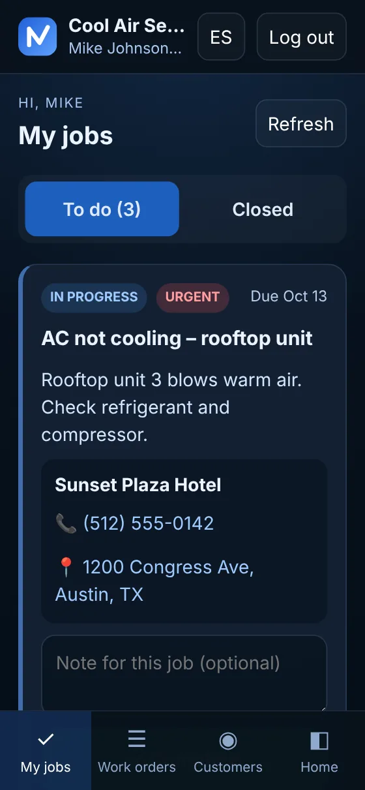

NOVAWORKORDER vs Jobber
A simpler alternative for small crews
Jobber is a complete platform to run a home service business. NOVAWORKORDER does one thing: puts every job on your technicians' phones and shows you where each one stands. If that's what you need, you may not need to pay for the rest.
$29 per technician per month · no credit card for the trial · cancel anytime

The short answer
Who each tool fits
NOVAWORKORDER fits you if…
- You run a small crew, roughly 1 to 10 technicians.
- Your main problem is jobs lost in texts, calls and paper.
- You already quote and invoice another way (or on paper) and just need the jobs organized.
- You want month-to-month pricing per technician, with no contract and office admins included.
Jobber fits you better if…
- You want quotes, invoices and online payments in the same tool as your jobs.
- You need online booking, automated client reminders or two-way SMS.
- You need QuickBooks Online sync or apps from an integration marketplace.
- You plan to use marketing tools, job costing or crew scheduling.
Side by side
What each one includes
Jobber's details come from its public website as of October 2026. Plans and features change, so check Jobber's pricing page before you decide.
| NOVAWORKORDER | Jobber | |
|---|---|---|
| Entry price | $29 per technician / month, month to month | Core (1 user): $49/mo with no commitment, or $29/mo billed annually (as of October 2026) |
| A 5-person crew | $145 / month (5 × $29), office admins at no extra cost | Connect, 5 users: $199/mo with no commitment, or $149/mo billed annually (as of October 2026) |
| Contract | None. No setup fee, cancel anytime | No-commitment monthly option; lower prices with a 1-year commitment or annual billing (as of October 2026) |
| Free trial | 14 days, no credit card | 14 days with Grow-plan features, no credit card (as of October 2026) |
| Jobs on the technician's phone | Yes, in the phone's browser; nothing to install | Yes, through Jobber's mobile app |
| Call the customer and open the map in one tap | Yes | See their site |
| Start and Complete with real times and notes | Yes | Time tracking on Connect and up |
| Owner dashboard with job status | Yes: pending, in progress, completed, overdue | Yes, built-in reporting |
| Customer history and customer access | Yes, customers can check their own jobs if you want | See their site |
| Your logo and colors in the app | Yes | See their site |
| Quotes and invoices | Not included | Yes, from Core |
| Online payments from your customers | Not included | Yes, from Core (processing fees apply) |
| Online booking | Not included | Yes, from Core |
| Automated reminders and two-way SMS | Not included | Yes: reminders from Connect, two-way SMS from Grow |
| QuickBooks Online sync and integrations | Not included | Yes: QuickBooks Online sync from Connect; 100+ integrations in its app marketplace |
| Marketing tools | Not included | Marketing Suite add-on (see their pricing page) |
| Support | By email, in English or Spanish | See their site |
Source: getjobber.com/pricing, checked October 14, 2026. Jobber's prices are in USD and depend on plan, number of users and billing option.
Being fair about price
When NOVAWORKORDER costs less, and when it doesn't
Month to month
Without a commitment, we cost less at both crew sizes in the table: $29 vs. $49 for one person, $145 vs. $199 for five (Jobber prices as of October 2026).
With an annual plan
Jobber's annual billing closes the gap: Core is $29/mo for one user and Connect is $149/mo for five (as of October 2026). Our price stays $29 per technician, with no commitment.
What you get for it
Jobber includes quoting, invoicing and payments that we don't. If you'd use them, compare the full value, not just the monthly price.
FAQ
Questions about switching
Is NOVAWORKORDER a full replacement for Jobber?
Not for every business. Jobber covers much more: quotes, invoices, online payments, online booking, client reminders, QuickBooks Online sync and marketing add-ons. NOVAWORKORDER focuses on one job: getting work orders to your technicians' phones and showing you their status in real time. If you need quoting and invoicing inside the same tool, Jobber is the better fit.
How much does NOVAWORKORDER cost compared with Jobber?
NOVAWORKORDER is $29 per technician per month, month to month, with office admins included. For example, 5 technicians cost $145 a month. As of October 2026, Jobber's pricing page lists Connect for 5 users at $199/mo with no commitment, or $149/mo billed annually. Check Jobber's pricing page for current numbers.
Do my technicians need to install an app?
No. NOVAWORKORDER runs in the browser of any phone (Android or iPhone) and computer. Technicians can add it to their home screen so it opens like an app.
Is there a contract or a credit card for the trial?
No. The 14-day free trial needs no credit card, and after that you pay month to month with no contract and no setup fee. You can cancel anytime.
Try it on real jobs
See if simple is enough for your crew
Start the 14-day free trial, add your technicians and send your first job. No credit card, no commitment.
Also comparing Housecall Pro? NOVAWORKORDER vs Housecall Pro →